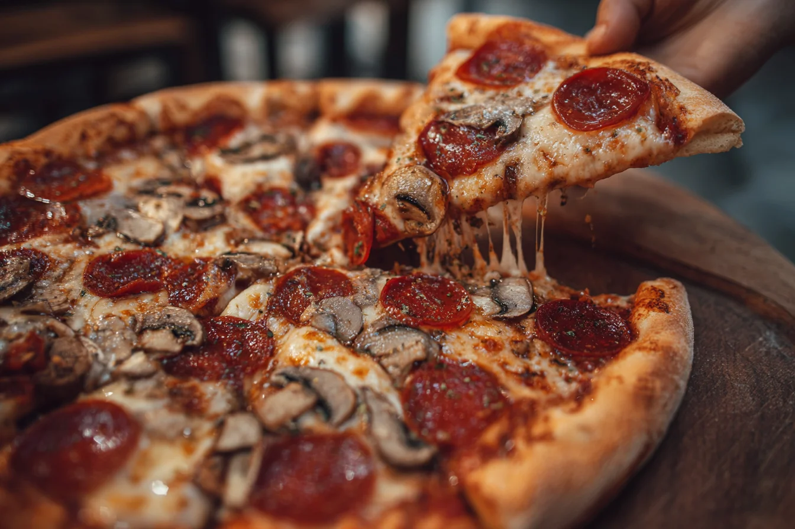

Rólunk
A Pizza Sarok egy családias hangulatú pizzázó, ahol a finom ételek és a jó kiszolgálás a legfontosabb.
Pizzáinkat friss alapanyagokból készítjük, és igyekszünk minden vendégünknek a kedvében járni.

Nyitvatartás
Hétfő - Péntek: 10:00 - 21:00
Szombat: 11:00 - 22:00
Vasárnap: 11:00 - 20:00